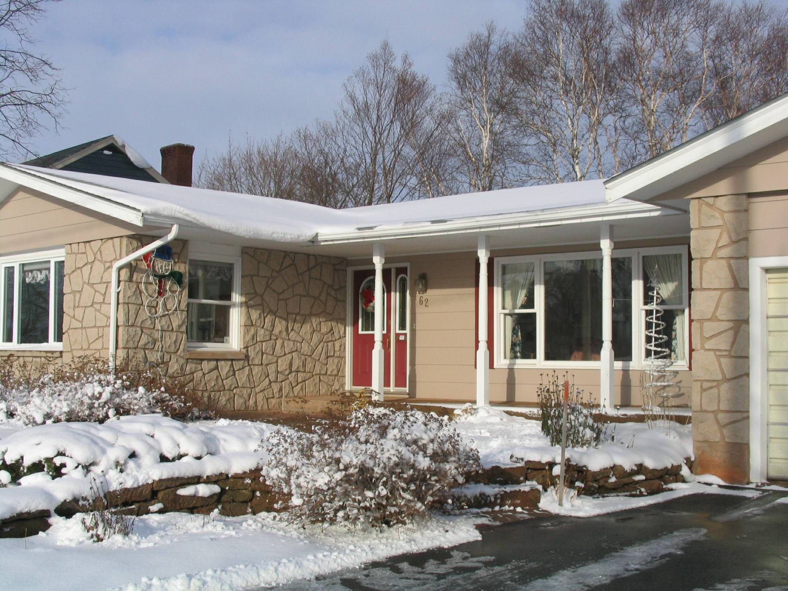

Christmas Greetings
from the Glendennings
Christmas 2014

Home
Dear
As is our custom, we start each Christmas season with a review of last year’s cards and, while doing so, reminisce about good friends and good times of yesteryear. Each year brings changes to the list but the new absences, and there are several, do not dull the memory of our friendships.
The Christmas season was officially marked a few days ago by my annual foray into the wilds of PEI to cut my Christmas tree – a rather spindly balsam fir, I will admit. Our snow, some 20-25 centimeters, has come and gone, and hours of daylight begin to lengthen in a couple of weeks; my candy cane is on the side of the house, my deer stands on the patio looking in the window and, as of an hour ago, I draped some lights over our burning bush.
We are grateful for good health, mobility, and independence – Carol with bridge, book club, and circle of friends; Don with his
summer vegetable garden and interest education; most of Don’s time appears to be spent in creating letters to the editor and having coffee with others of the same mind.
We did not leave PEI last winter; Carol had had a change in her medicine and our out of country insurance would not cover us. We did get away for a couple of weeks in May and travelled as far as Pennsylvania. The highlight of our summer was time at the cottage and visits from family.

The above family photo, Don, Carol, Brian, Mike and Janet (Marie took the photo) was actually taken in 2012 beside the flagpole at our cottage. Granddaughter, Lisa, and husband, Kevin, live in Seattle while other Granddaughter, Laura, lives in Columbia, Maryland. Brian and Marie were home for a couple of weeks in early August and Mike and Janet in early September. It is a couple of years since we saw our granddaughters.
This was a year for home renovations, painted our house, added a room and stained our cottage, had to replace outr fridge and, at the moment coping with a wall oven that gave out.
Brian and Janet just returned from a three-week sojourn in India. We hope to take a winter break this year but time will tell.
We are grateful for our many blessings, that we can continue to live in our own home, that we are mobile and able to be out in the community on our own, for our breakfast group, Carol’s bridge group, Don’s coffee group, a summer vegetable garden, interests that engage us, friends and family who keep an eye on us, and to live in a peaceful corner of a war-torn globe.
To friends and family everywhere, we send greetings, warm wishes for good health and peace in our world.. You are much in our thoughts and prayers as you read this note.

Evening view from our cottage deck